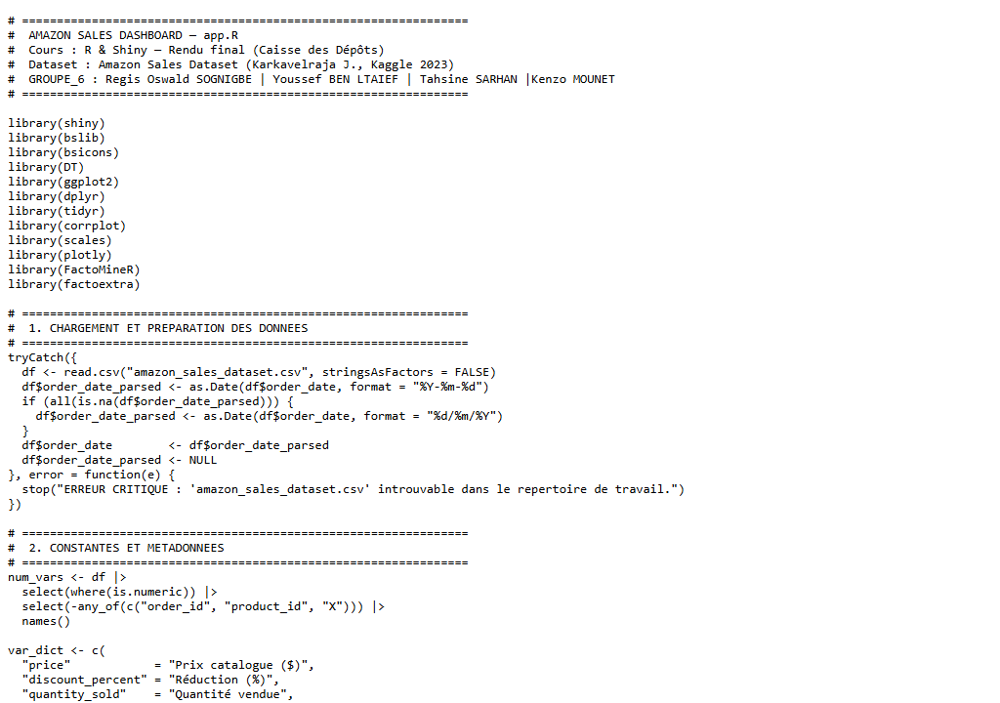
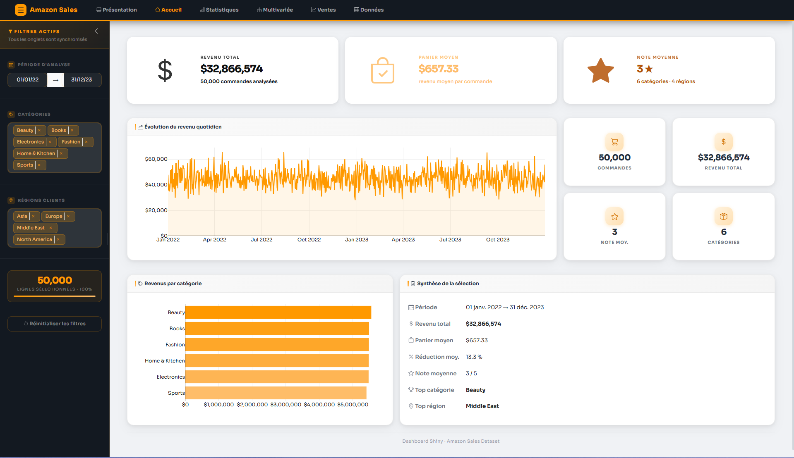

| Nom de la SAE | Tableau de bord interactif R Shiny – Amazon Sales | |||
| Coéquipiers : | Regis Oswald SOGNIGBE | Tahsine SARHAN | ||
| Kenzo MOUNET | ||||
| Sujet spécifique | Développement d'une application Shiny d'analyse des ventes Amazon (Amazon Sales Dataset, Kaggle 2023) – rendu final pour le cours R & Shiny (Caisse des Dépôts). |
| Objectifs |
Concevoir et développer une application Shiny complète avec une interface soignée (bslib). Visualiser les ventes, tendances et performances produits de façon interactive (plotly, DT). Intégrer des analyses statistiques multivariées (ACP avec FactoMineR, corrélations). Travailler en équipe : organisation, partage du code, cohérence de l'application. |
| Livrables | Application R Shiny (app.R + amazon_sales_dataset.csv) |
| Compétence | Développer |
| Apprentissages critiques sollicités | AC24.01VCOD : Comprendre le rôle fondamental de l'analyse des besoins et de l'existant dans un projet décisionnel (architecture, visualisation...) |
| AC24.02VCOD : Percevoir les enjeux de l'automatisation et de l'interopérabilité d'un ensemble de tâches | |
| AC24.03VCOD : Prendre conscience des différences entre outils (logiciels, langages) pour choisir le plus adapté | |
| AC24.04VCOD : Comprendre le cycle de vie d'un projet informatique | |
| Composantes essentielles à respecter | Analyser les besoins (types d'analyses, KPIs) avant de concevoir l'architecture Shiny (UI/server). |
| Automatiser le reporting (réactivité Shiny) et assurer l'interopérabilité avec les données CSV Amazon. | |
| Choisir R Shiny + bslib + plotly comme solution adaptée, tout en respectant le cycle de vie du projet. |
| Compétence | Traiter |
| Apprentissages critiques sollicités | AC21.01 : Comprendre l'organisation des données de l'entreprise |
| AC21.02 : Réaliser le rôle central et spécifique de l'entrepôt de données dans la chaîne décisionnelle | |
| AC21.03 : Identifier et résoudre les problèmes d'intégration de sources complémentaires et hétérogènes | |
| AC21.04 : Comprendre la nécessité de tester, corriger et documenter un programme | |
| AC21.05 : Apprécier l'intérêt de briques logicielles existantes et savoir les utiliser | |
| Composantes essentielles à respecter | Comprendre la structure des données Amazon (colonnes, types, dates) avant de construire les indicateurs. |
| Tester, déboguer et documenter les fonctions réactives du dashboard. | |
| Exploiter les packages existants (FactoMineR, plotly, DT, bslib) pour accélérer le développement. |
| Compétence | Valoriser |
| Apprentissages critiques sollicités | AC23.01 : Saisir l'intérêt de mobiliser de manière proactive les ressources métiers liées à l'environnement (y compris économique, international...) |
| AC23.02 : Savoir défendre ses choix d'analyses | |
| AC23.03 : Saisir la nécessité de choisir des indicateurs pertinents pour communiquer sur les résultats | |
| AC23.04 : Prendre conscience de la rigueur requise dans ses productions et dans la communication à leur propos | |
| Composantes essentielles à respecter | Contextualiser les données Amazon dans une problématique commerciale réelle (KPIs de vente, tendances). |
| Justifier les choix de visualisations et d'indicateurs retenus dans le dashboard. | |
| Produire une application rigoureuse : code documenté, interface claire, résultats reproductibles. |
| Savoirs / connaissances | Savoir-faire | Savoir-être |
|---|---|---|
|
Architecture Shiny (UI / server / réactivité). Composants bslib (cards, value boxes, bs_theme). Visualisations interactives : plotly, DT (tables). ACP avec FactoMineR et représentation avec factoextra. Données commerciales Amazon (ventes, dates, catégories). |
Concevoir une interface Shiny multicouche (bslib + bsicons). Créer des visualisations interactives avec plotly et ggplot2. Implémenter une ACP réactive dans une app Shiny. Parser des dates dans différents formats (as.Date, format). Gérer les erreurs de chargement de fichiers (tryCatch). |
Travail en équipe (Groupe 6) : organisation et répartition des modules. Sens du détail dans le design de l'interface (UX). Communication autour du code (lisibilité, commentaires). Respect des délais de livraison. |
Ce que je trouve bien réalisé, pourquoi ?
L'application est complète et bien structurée : elle combine visualisations commerciales (ventes, catégories) et analyses statistiques (ACP, corrélations) dans une seule interface. L'utilisation de bslib donne un aspect professionnel et moderne. Le travail en groupe a bien fonctionné grâce à une répartition claire des modules.
Ce que je n'ai pas bien compris ; ce qui serait à améliorer pour une prochaine fois : pourquoi ? comment ?
La réactivité Shiny (reactive(), observe(), eventReactive()) n'est pas toujours facile à maîtriser, surtout quand plusieurs filtres interagissent. Pour une prochaine fois : mieux planifier l'architecture réactive en amont ; tester les modules séparément avant de les intégrer.

